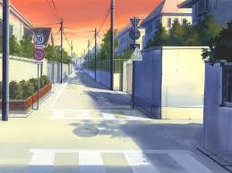
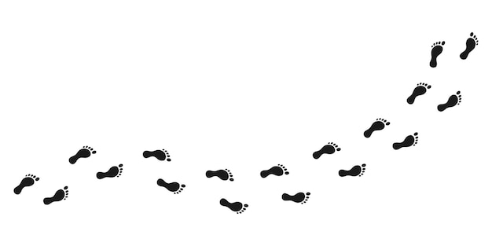
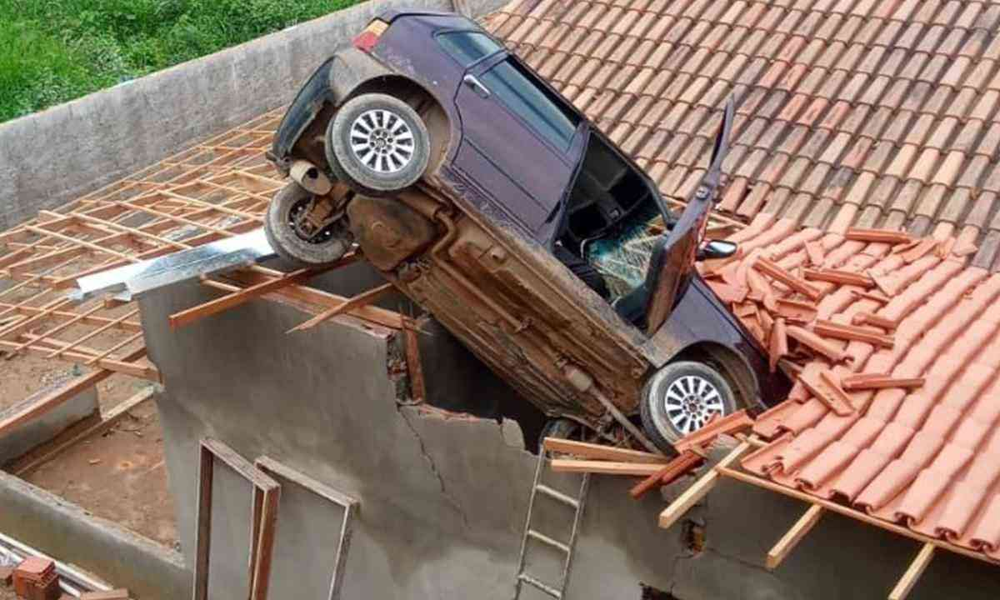
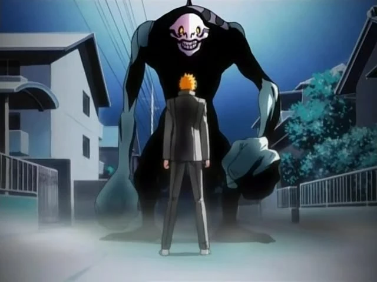
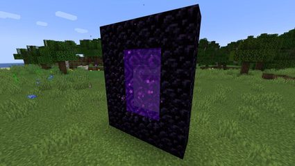
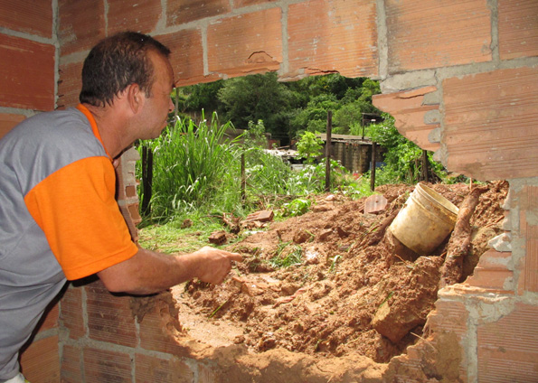
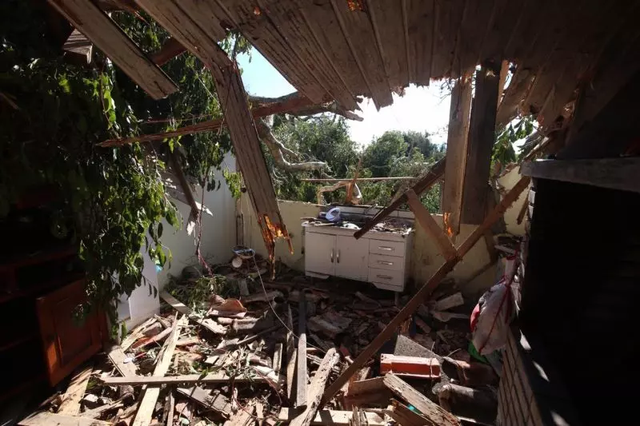
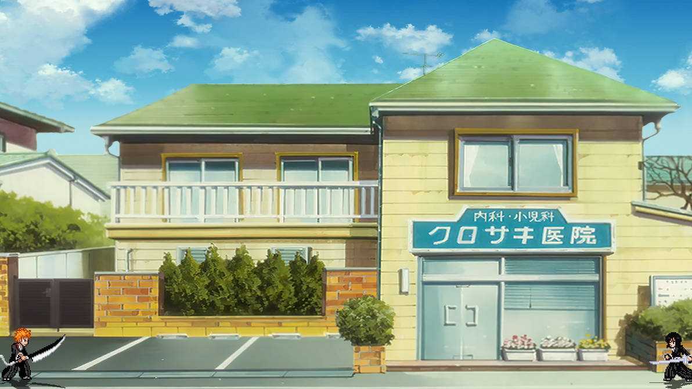

após um dia de muito frio e ventos gelados, você têm um mau presságio
um barulho estrondoso surge do lado de fora

passos são ouvidos atrás de sua casa

o telhado da sua casa é destruido

um hollow surge e te ataca, te fazendo ir parar no hueco mundo

voce vê um portal para a soul society
um pílar de sustentação da sua casa cai em suas costas
você é teleportado para dentro da soul society,e vê pessoas perigosas.

as paredes de sua casa caem!
você encontra um hollow
você é encurralado pelo hollow

sua casa é detonada perante seus olhos

você acorda e percebe que tudo foi um sonho